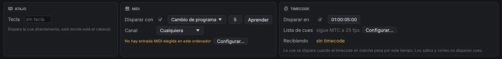

Cues y tiempos
2.1Tipos de cue
.mid) por una salida MIDI.Cada cue tiene un número (texto libre, como 4.2), un nombre, notas,
un color y un interruptor Armada, todo en la pestaña Básico. GO se salta una cue desarmada.
Básico también ajusta la pre-espera, el modo de continuación y la post-espera de la
cue y, para cues de audio y vídeo, el archivo de medios.
La pestaña Disparadores reúne las formas de disparar una cue además de GO: un atajo, una tecla que dispara la cue directamente esté donde esté el cabezal, un disparador MIDI y un disparador por código de tiempo.
Disparadores MIDI
Una cue puede dispararse al llegar un mensaje MIDI: una nota activada, un cambio de programa o un cambio de control (se dispara cuando el valor sube a 64 o más, como hace un botón que manda 127/0). En la pestaña Disparadores marca Disparar con y elige el tipo, el número y el canal (o Cualquiera), o pulsa Aprender y manda el mensaje desde el teclado, el pad o la mesa. La cue se dispara esté donde esté el cabezal, una vez por pulsación; las cues desarmadas no se disparan.
Los mensajes llegan por la entrada MIDI de este ordenador, elegida en (Configurar… en la tarjeta la abre). La misma entrada puede llevar también asignaciones de superficies de control y MTC; para llevar toda la lista con cambios de programa, asigna allí un cambio de programa a GO.
Disparadores de reloj
La tarjeta Reloj de la pestaña Disparadores lanza una cue a una hora del día según el reloj de este ordenador: marca Disparar en, pon horas, minutos y segundos, y elige los días en que se lanza (ninguno elegido = todos los días). La cue se lanza cuando el reloj pasa por esa hora. Si se cambia la hora o el ordenador estaba en suspensión, no se lanza nada por el tiempo saltado. Las cues desarmadas no se lanzan.
Cues que cambian otras cues
- Armar y Desarmar cambian el ajuste Armada del destino, como si lo marcaras en su pestaña Básico. Una cue que se lance justo después (con autocontinuar) ya ve el cambio.
- Destino cambia sobre qué actúa otra cue: Cambiar el destino de es la cue que se cambia (una cue Fade, Iniciar, Parar, Pausa, Ir a, Devamp, Armar, Cargar…), Nuevo destino la cue sobre la que actuará desde entonces. Así, por ejemplo, una lista de reproducción puede repetir desde su segunda pista tras la primera vuelta.
- Cargar deja el destino listo para empezar a mitad: su próximo inicio empieza Cargar en el tiempo segundos dentro, contando su pre-espera. Los archivos de sonido y las películas empiezan desde ese punto; un destino que ya está en marcha salta ahí. Vale una vez: el inicio siguiente vuelve a ser desde el principio. Una película en bucle no se puede cargar.
- Restablecer detiene el destino (y las cues que contiene) al instante y devuelve lo que las cues Armar, Desarmar, Destino y Cargar les cambiaron desde que se abrió el espectáculo.
Las cues Armar, Desarmar y Destino cambian el espectáculo como una edición: guárdalo después si el cambio debe quedarse.
Cues MIDI
Una cue MIDI envía un mensaje por una salida MIDI: elige la salida (o Primera salida MIDI) y el
mensaje. Las notas y los cambios de control llevan canal, número y valor; el cambio de programa, un
programa; el pitch bend, un valor de 0 a 16383 (8192 es el centro). MIDI Show Control envía una orden
(GO, STOP, RESUME, LOAD…) con número de cue y lista a un ID de dispositivo (127 = todos) en un formato de orden, para que
OpenQ maneje una mesa de iluminación u otro ordenador de espectáculo. SysEx envía cualquier mensaje System
Exclusive escrito en hexadecimal (F0 … F7). Debajo de los ajustes se ven los bytes que se enviarán.
Cues de archivo MIDI
Una cue de archivo MIDI reproduce un Standard MIDI File hacia un sintetizador, un rig de teclados o una mesa de luces.
Elige el archivo en la pestaña Básico (o suelta un .mid en la lista de cues); en la pestaña
Ajustes elige la salida, la velocidad (100 % = el tempo del propio
archivo) y Bucle para reproducirlo hasta que se pare. La duración de la cue es la del archivo a esa velocidad.
Al pausar o parar la cue se sueltan las notas que siguen sonando. Si empieza a medias (con una cue Load), envía antes el
último programa, controladores y pitch bend de cada canal, para que los instrumentos suenen como en ese punto.
2.2Tiempos y continuaciones
Cada cue tiene tres tiempos. La pre-espera transcurre entre GO y la acción de la cue. La acción es la cue en sí: un sonido que suena, un fundido en marcha. La post-espera se cuenta desde el inicio de la acción y la usa autocontinuar.
| Modo de continuación | Qué pasa después |
|---|---|
| No continuar | Nada. El cabezal pasa a la siguiente cue y espera a GO. |
| Autocontinuar | La siguiente cue se dispara cuando se agota la post-espera de esta. |
| Autoseguir | La siguiente cue se dispara cuando termina la acción de esta. |
Las cues encadenadas arrancan exactamente en el límite de una muestra, así que una secuencia mantiene su tiempo por mucho que dure.
Grupos
| Modo de grupo | Comportamiento |
|---|---|
| Iniciar la primera hija y entrar en el grupo | Dispara la primera cue del grupo y mete el cabezal dentro. |
| Iniciar la primera hija y pasar a la siguiente cue | Una lista de reproducción: las hijas suenan una tras otra mientras el cabezal pasa más allá del grupo. |
| Iniciar todas las hijas a la vez | Dispara todo lo que contiene a la vez, cada uno con su propia pre-espera. |
| Iniciar una hija al azar y pasar a la siguiente cue | Dispara una hija elegida al azar. |
Selecciona cues y pulsa Ctrl+G para agruparlas. ← y → pliegan y despliegan un grupo. Los grupos pueden contener otros grupos. Cada nivel se sangra con una línea guía, para ver dónde termina un grupo.
2.3Fundidos
Una cue Fade cambia otra cue mientras suena. Elige la cue de destino, la duración y la curva (lineal, en S o logarítmica), y marca lo que quieres cambiar:
- Nivel en dB, para audio y para bandas sonoras de vídeo.
- Opacidad, para vídeo y texto.
- Geometría: posición, escala, rotación y recorte. Parte de la geometría propia del destino, así que solo se mueven los valores que cambies.
- Efectos de vídeo: los ajustes de FX de vídeo del destino se copian en el fundido al marcarlo; cambia los valores hacia los que fundir. Un efecto apagado aquí se funde hacia fuera, y los efectos que el destino no tiene entran fundiendo desde nada. Tomar los efectos del destino los vuelve a copiar después de cambiar de destino.
- Objetos, para destinos en modo audio por objetos: las posiciones y la dispersión a las que mover los objetos, editadas en la misma vista de sala.
- Faders de salida, para sonido: el nivel de cada salida tras la matriz de enrutado (los faders de la pestaña Niveles del destino). Sirve para llevar un sonido de los altavoces frontales a los traseros.
- Efectos de audio: los ajustes de Audio FX del destino se deslizan hasta los valores puestos aquí. Un efecto que se enciende o apaga, o uno de otro tipo, cambia al empezar el fundido.
Una cue Fade no puede tener como destino una cue de luz: la iluminación funde con sus propias cues de luz (ver Iluminación).
Marca Parar el destino para un fundido de salida: el destino se para al terminar el fundido. Pausar un fundido lo congela, y reanudarlo continúa con el tiempo que quedaba.
2.4Código de tiempo
OpenQ puede llevar una lista de cues a partir de código de tiempo SMPTE entrante, para un espectáculo sincronizado con un vídeo, el click de una banda o una mesa de luces. Lee LTC (código de tiempo como señal de audio) en una entrada de audio o MTC (MIDI Time Code) en una entrada MIDI, a 24, 25, 29,97 drop-frame o 30 fps.
Configurar una lista de cues
Haz clic derecho en la pestaña de la lista y elige Timecode…. Elige qué sigue la lista (LTC o MTC), la entrada de audio y el canal o la entrada MIDI por la que llega, y la frecuencia de fotogramas. La ventana muestra el código de tiempo que entra, y mientras esa lista está al frente la tarjeta de espera también lo muestra. Cada lista sigue su propia fuente, así que una lista puede seguir el LTC de la banda mientras otra se lleva a mano.
Disparadores por código de tiempo

En la pestaña Disparadores de una cue, marca Disparar en y escribe el tiempo (hh:mm:ss:ff). Cuando el código de tiempo de la lista pasa por ese momento, la cue se dispara, esté donde esté el cabezal, y sus continuaciones funcionan como siempre. La pestaña muestra qué sigue la lista y qué está recibiendo; Configurar… abre los ajustes de código de tiempo de la lista.
Solo el código de tiempo que avanza dispara cues. Cuando la fuente salta (un locate o un rebobinado) o se para, no se dispara nada, y los disparos se retoman desde la nueva posición, así que ensayar una sección haciendo retroceder la fuente es seguro.
Enviar timecode
Una cue Timecode envía timecode mientras está en marcha, para que lo siga una mesa de iluminación, un servidor de vídeo u otro ordenador de espectáculo. Elige LTC (una señal de audio por un canal de salida del dispositivo de audio, al nivel puesto) o MTC (por una salida MIDI), los cuadros por segundo y el tiempo de inicio. El código corre desde el inicio durante la duración de la cue (0 = hasta que se pare); pausar la cue detiene el código y reanudarla lo continúa.